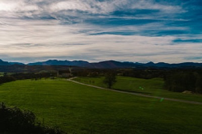

Як обрати хороший туристичний рюкзак?
Вибір хорошого туристичного рюкзака – запорука успіху будь-якої самостійної подорожі.
Якщо він занадто великий, у тебе буде багато зайвого місця. Занадто маленький, і в нього не влізуть усі потрібні тобі речі. А якщо вибереш неправильний матеріал, то під час дощу всі речі можуть промокнути.
За останні роки самостійних подорожей по Азії я випробував на собі багато рюкзаків і більш менш почав розбиратися в цьому питанні. Тому щоб заощадити ваш дорогоцінний час на пошуки потрібного рюкзака, я постараюся поділитися всіма корисними фішками, якими повинен володіти правильний туристичний рюкзак. І якщо ти знайдеш рюкзак, який підходить по більшості цих критеріях – можеш сміливо його купувати і бути впевненим в тому, що він тебе не підведе і прослужить цілу вічність!
Найкращі рюкзаки для тривалих подорожей (які міцні, захищені і майже безсмертні) володіють наступними характеристиками:
Водовідштовхуюча тканина
Рюкзак не обов’язково повинен бути на 100% водонепроникним. Таких дуже мало. Але обов’язково переконайся в тому, що він зшитий з тканини з силіконовим / поліуретановим покриттям (PU позначається) або має вбудований чохол від дощу. Такі рюкзаки не бояться навіть зливи, і речі всередині завжди залишаться сухими.
Замикаючі застібки на блискавці
Переконайся, що основний відсік рюкзака має два зіпери-застібки на блискавці, щоб їх разом можна було замкнути на замок. Особисто я особливо не переживаю за збереження речей і в мене, тьфу-тьфу, за три роки подорожей нічого не крали. Але підстрахуватися не завадить, особливо якщо ти плануєш брати з собою цінні речі (такі як ноутбук, камеру, діаманти) і здавати такий дорогоцінний рюкзак в камеру зберігання індійського з/д вокзалу.
Кілька відділень
У правильного рюкзака повинно бути кілька відділень. Так ти зможеш розгрупувати всі речі і тобі буде набагато простіше дістатися до того, що потрібно. Наприклад, я зберігаю свій одяг і ноутбук в головному відділенні; паспорт, камеру, Кіндл і зарядку для телефону – у верхньому; дощовик, ліхтарик і спальник – в бічних. Таке правильне розділення речей економить купу мого часу. Мені не потрібно щоразу копатися в рюкзаку, щоб дістатися до камери і зняти потрібний момент на відео або щоб пред’явити свій паспорт під час чек-іну в аеропорту.
Вбудований каркас
Більшість туристичних рюкзаків зараз мають вбудований каркас, який забезпечує міцність всієї конструкції. Але також є й інші рюкзаки: м’які, зовсім без каркасу і також олдскульні, – з громіздкими випираючими рамами, зробленими з металу. Таких монстрів купувати не раджу. Краще купи рюкзак з вбудованим гнучким каркасом. Гнучкий каркас буде слідувати за всіма твоїми рухами і захищати твою спину. А якщо каркас буде зроблений з вуглеволокна або алюмінію – то і важити такий рюкзак буде зовсім небагато.
Поясний фіксатор
Велика частина всієї ваги рюкзака припадатиме на твої стегна. І якщо там не буде тямущої підтримки – такий рюкзак тебе просто вб’є. Тому дуже важливо знайти рішення з хорошим поясним фіксатором. Хороший пояс повинен бути регульованим, в міру м’яким, в міру жорстким, не надто вузьким, але і не дуже широким. Кращий спосіб переконатися в цьому – перевірити рюкзак при купівлі на собі.
Широкі плечові лямки
Широкі (6-8 см) плечові лямки зроблять розподіл навантаження на плечі більш рівномірним і безболісним. А погані, вузькі лямки будуть здатні звести нанівець всі достоїнства нового рюкзака. Обов’язково переконайся в тому, що лямки досить жорсткі (для підтримки початкової форми) і досить м’які (для зручності). Також оббивка у лямок повинна бути товстою і зроблена з міцної тканини.
Вентиляція спини
Припустимо, рюкзак важить 15 кг. Цієї ваги буде цілком достатньо, щоб дуже щільно притиснути рюкзак до спини мандрівника. Що станеться зі спиною після півгодинної пішої прогулянки по задушливих вулицях Бангкока в пошуку дешевого гестхауса? Правильно. Так як потік повітря до спини обмежений, вона почне потіти, одяг смердіти і турист почне передчасно втомлюватися. У правильних туристичних рюкзаків ця проблема вирішується за допомогою системи вентиляції спини. Як правило ця система виглядає як жорстко натягнута сітка, яка близько прилягає до спини і залишає потрібний вільний простір між спиною мандрівника і стінкою самого рюкзака.
Об’єм туристичного рюкзака
Будь ласка, повір моєму досвіду, для того, щоб відправитися в тривалу самостійну подорож, тобі не потрібна велика кількість речей і великий рюкзак. Навпаки – чим менше кілограм буде за твоєю спиною, тим краще. По-перше, ти станеш більш мобільним, тобто зможеш легко пересуватися на тривалі відстані без особливого напрягу для своєї спини. По-друге, ти зекономиш купу грошей на авіаперельотах. Тобі не потрібно буде платити зайві $ 40 за зареєстрований багаж, кожен раз ти куди-небудь летиш, тому повний рюкзак вагою до 10 кг практично завжди можна пронести з собою на борт літака абсолютно безкоштовно. Я подорожую з 2010 року з єдиним 35-літровим рюкзаком від Berghaus. Загальна його вага з речами рідко перевищує 10 кг (включаючи ноутбук і камеру) і я жодного разу не платив за багаж (і не доплачував за перевагу) під час перельотів.